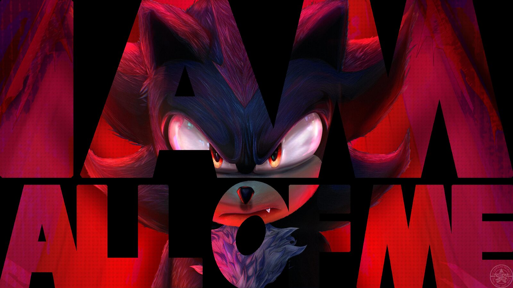
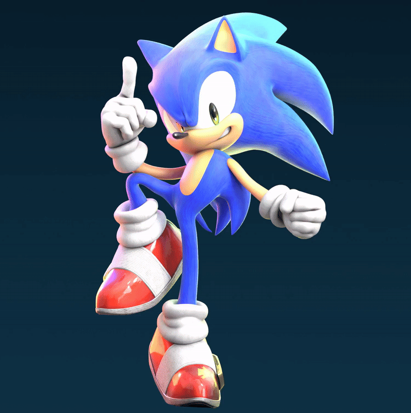
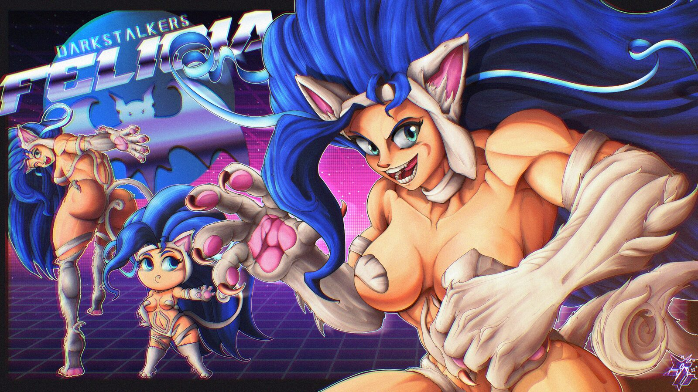
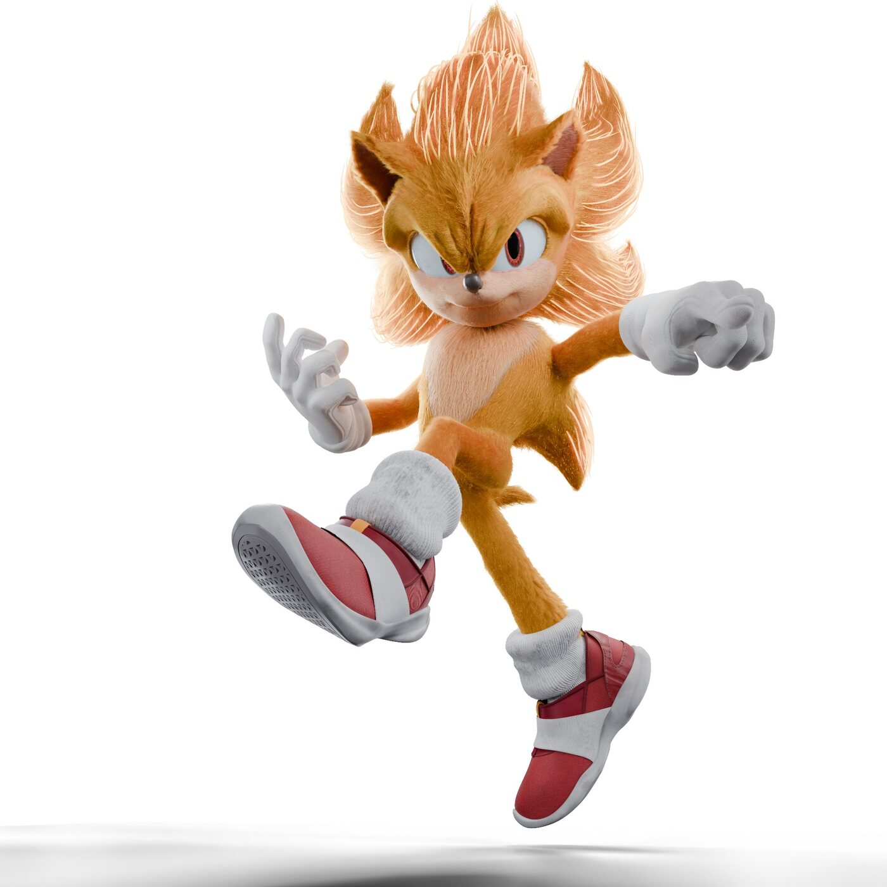

Digital Media Artist | 2D + 3D art and Motion Graphics !
Richard Allen Rojas-Rangel
HELLO!! Welcome to my one-page portfolio for Art 109 and other program tutorials! This is a collection of some of
my 3D renders, animation tests & and my illustrations for class!
Hello My name is Richard Rojas-Rangel, and I am a Digital Media Art student at
SJSU. I mainly work with 3D art, animation, graphic design & interactive
media!! I like combining technology with art because it lets me experiment
with a bunch of different ideas, characters, and styles while still making
everything feel like me.
02 / Portfolio
Selected Work
A responsive Flexbox grid of some of my 3D renders, animations &
illustrations. Each project can grow, shrink, and wrap depending on the
size of the screen.

Project 01
I Am All of Me
This is a Shadow the Hedgehog piece I made that focuses on dramatic
lighting, since it is based on the scene from the movie where he is
finally freed!! I used Clip Studio Paint to make this artwork ( and After Effects).

Project 02
Sonic Animation Test
This Sonic piece was a render and animation test where I focused on
posing, materials & getting his personality to come through from an
original artwork from the actual series. I wanted him to feel faithful
but still look like he was ready to move (also making sure 2D worked in 3D).

Project 03
Felicia - Darkstalkers
This Felicia piece combines illustration, character art & graphic design.
I used multiple versions of her in the composition to make it feel like
a loud arcade or fighting game poster that you would see in art books and releases.

Project 04
Super Sonic Render
This Super Sonic render was mainly a lighting and material experiment.
I wanted his fur and glow to feel warm and powerful while keeping the
background simple so the character stands out.
03 / Tools
Programs I Use
Blender
Substance Painter
After Effects
Illustrator
Clip Studio Paint
Krita
p5.js
04 / CSS Motion
Transitions + Animations
These are two little CSS motion tests I made for ART 109. Hover over or
tab into the first one to trigger its transition; the second one moves
by itself using a CSS animation.
Transition
Interactive Signal
This element transitions its width, background color, text color,
shadow & transform when you hover over it or focus it with a keyboard.
Animation
Looping Signal
S0
This element uses one named @keyframes animation that
loops back and forth forever.
05 / JavaScript + DOM
Click to Change the Art
Click the image below to swap between two pieces! JavaScript selects
both images through their IDs, then adds or removes the
hidden class whenever you click one.
Showing: I Am All of Me. Click the image to see Felicia!
You can also select the image with Tab and press Enter or Space.